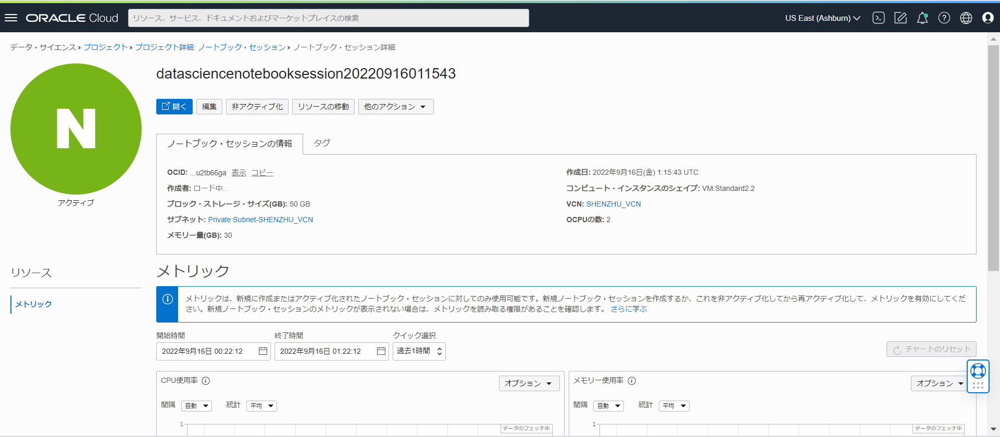
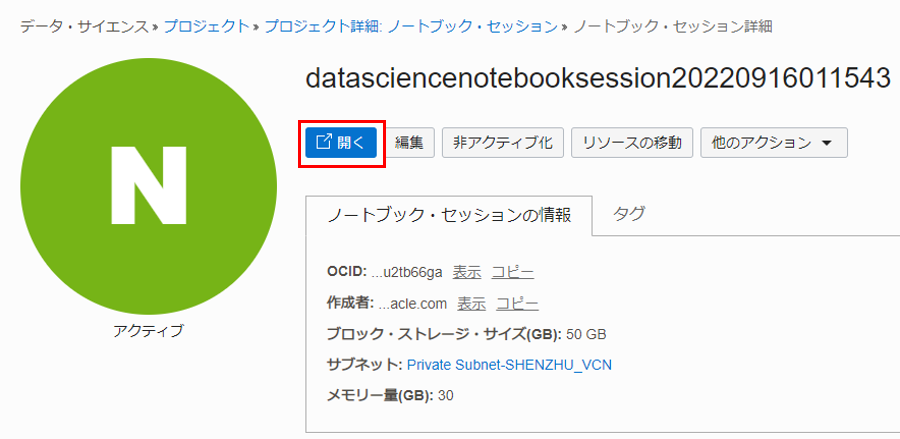

事前準備
仮想クラウド・ネットワークの作成
OCIコンソールで「仮想クラウド・ネットワーク」 > 「VCNウィザードの起動」 > 「インターネット接続性を持つVCNの作成」を選択して、VCNとサブネットを作成します。これにより、NAT ゲートウェイを使用して必要なプライベート・サブネットを自動的に作成します。
動的グループの作成
次の一致ルールで動的グループを作成します。
ALL { resource.type = 'datasciencenotebooksession' }
ポリシーの作成
次のステートメントを使用して、ルート・コンパートメントにポリシーを作成します。
サービス・ポリシー
allow service datascience to use virtual-network-family in tenancy
管理者以外のユーザー・ ポリシー
allow group <ユーザー・グループ> to use virtual-network-family in tenancy
allow group <ユーザー・グループ> to manage data-science-family in tenancy
動的グループに対するポリシー
allow dynamic-group <作成した動的グループ> to manage data-science-family in tenancy
ノートブック・セッションの作成
OCI コンソール画面左上のハンバーガーメニューを展開し、「アナリティクスとAI」 > 「データ・サイエンス」を選択します。

プロジェクトを作成します。コンパートメントを選択し、「プロジェクトの作成」をクリックします。プロジェクトの作成画面で、名前と説明を入力し、「作成」をクリックします。

ノートブック・セッションを作成します。作成したプロジェクト名をクリックします。

プロジェクトの詳細画面で、「ノートブック・セッションの作成」をクリックします。

ノートブック・セッションの詳細を入力します。
- 名前：任意の名前を入力します。
- コンピュート・シェイプ： Intel Skylake VM. Standard2.2 を選択します。
- ブロック・ストレージ・サイズ： 50 GB に設定します。
- VCNとサブネット：「カスタム・ネットワーキング」を選択し、作成したインターネット接続のあるプライベート・サブネットを選択します。
- 「作成」をクリックします。


ノートブック・セッション VM が作成されます。これは数分かかります。プロビジョニングされたノートブック・セッションを開くと、以下の画面になります。


API 署名キーと構成ファイルの作成
API 署名キー・ ペアを生成します。 OCIコンソール画面右上のプロファイル・アイコンをクリックし、「ユーザー設定」を選択します。

左側で「APIキー」を選択し、「APIキーの追加」をクリックします。

「APIキー・ペアの生成」を選択し、「秘密キーのダウンロード」をクリックし、キー・ファイルを保存します。「追加」をクリックします。

構成ファイルをコピーし、「閉じる」をクリックします。

構成ファイル（config）を作成し、コピーした値を貼り付けます。 key_file の値を、生成された秘密キーのパスに置き換えます。

ノートブック・セッションを起動します。ノートブック・セッションの詳細画面で「開く」をクリックします。

ターミナルを開きます。「File」>「New Launcher」を選択します。Launcher画面で「Terminal」アイコンを選択します。


ターミナルで、以下のコマンドを実行し、.oci ディレクトリを作成します。
mkdir ~/.oci
アップロード・アイコンをクリックし、作成した構成ファイルと秘密キーをノートブック・セッションにアップロードします。

ターミナルで、以下のコマンドを実行し、構成ファイルと秘密キーを .oci フォルダーに移動します。
mv <path of the config file> ~/.oci/
mv <path of the private key> ~/.oci/

画像分析 API の呼びだし
Image features demo 1 および Image features demo 2 ファイルをダウンロードし、ノートブックにアップロードします。

Image features demo 1 は画像分類のノートブックで、Image features demo 2 は物体検出と テキスト検出のノートブックです。 アップロードしたノートブックを開きます。各セルを調べて、1 つずつ実行します。 各セルで Shift+Enter キーをクリックして、セル内のコードを実行できます。
ドキュメント分析 API の呼びだし
Document AI features demo 1 および Document AI features demo 2 ファイルをダウンロードし、ノートブックにアップロードし、実行します。 Document AI features demo 1 は、テキスト分類のノートブックで、 Document AI features demo 2 は、文書分類、言語分類、テーブル検出のノートブックです。

バッチ（非同期 API）の呼びだし
Image classification batch feature demo および Document text detection batch feature demo ファイルをダウンロードし、ノートブックにアップロードし、実行します。
Image classification batch feature demo は、画像分類のノートブックで、Document text detection batch feature demo は、テキスト検出のノートブックです。これらのノートブックは、バッチ入力よりも Vision サービスの画像とドキュメントの AI 機能を使用する方法を示しています。